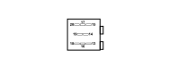

P075 CD PLAYER/CHANGER (DASHBOARD)
- Path
- Electrical equipment > 3 CONNECTORS > P VARIOUS CONSUMERS > P075 CD PLAYER/CHANGER > P075 CD PLAYER/CHANGER (DASHBOARD)
- Kind
- connector pinout (pin -> wire colour -> other end)
- Applies to
- all engines; all production periods
- Interactive page
- https://sloeber94.github.io/elrnDB-fPnd/en/#/169003592
Applies to: all engines; all production periods

Wiring | Colour |
|---|---|
- |
Pin | Cable | Destination | |||
|---|---|---|---|---|---|
Sec.. | Colour | Node | Connect. | Pin | |
13 | 0,35 | GM (yellow with brown stripe) | 13 | ||
14 | 0,35 | LZ (blue with violet stripe) | 14 | ||
15 | 1 | R (red) | 15 | ||
16 | 0,35 | HV (grey with green stripe) | 16 | ||
17 | 1 | N (black) | 17 | ||
18 | 0,35 | N (black) | 18 | ||
19 | 0,35 | BZ (white with violet stripe) | 19 | ||
20 | 0,35 | SZ (pink with violet stripe) | 20 | ||